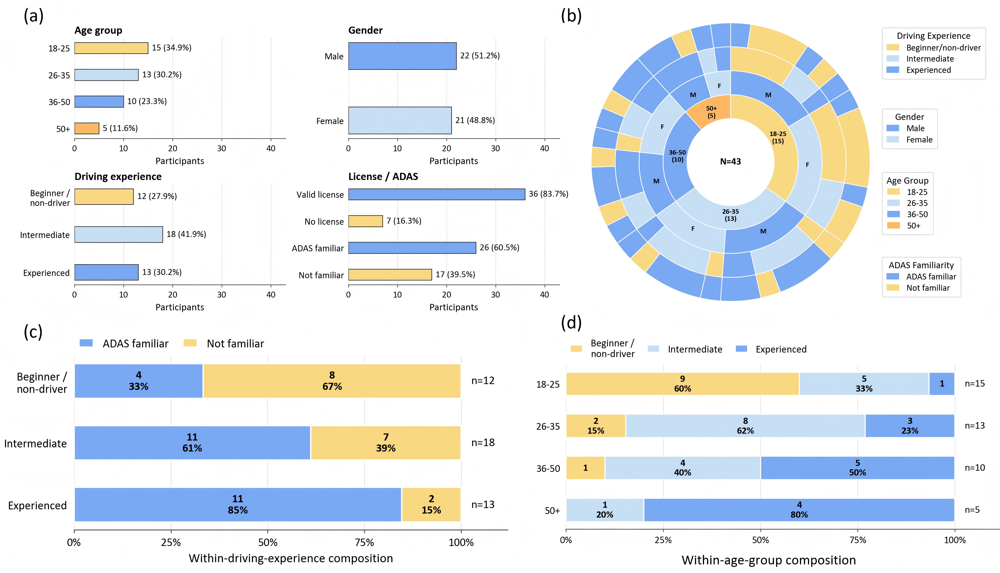
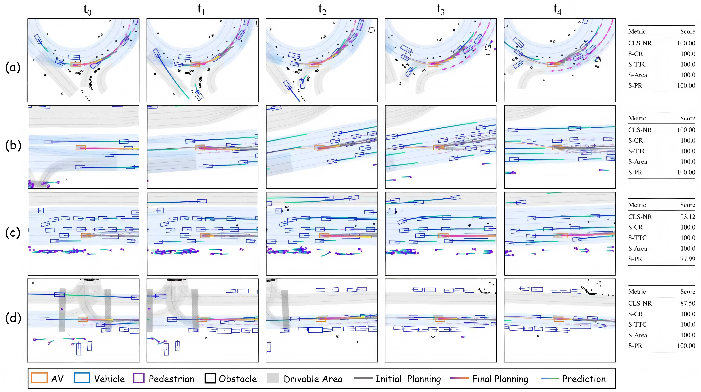

I am currently on the job market and open to faculty and postdoctoral opportunities.
Chengyue Wang
Ph.D. Student at the University of Macau
State Key Laboratory of Internet of Things for Smart City
I study embodied agents capable of understanding, anticipating, and interacting with the physical world.
01
About
I am a Ph.D. Student at the State Key Laboratory of Internet of Things for Smart City, University of Macau, advised by Prof. Zhenning Li.
My research lies at the intersection of AI and transportation, with a focus on advancing intelligent, autonomous, and trustworthy mobility systems.
02
News
I will be attending APTE 2026. See you in Jeju, Korea!
I will be attending AAAI 2026. See you in Singapore!
I will be attending CICTP 2025. See you in Guangzhou, China!
I successfully passed the Qualification Exam.
I began this wonderful academic journey at the University of Macau.
03
Education
2021
Chang'an University
B.E. in Traffic Engineering
2022
University of Illinois at Urbana-Champaign
M.S. in Civil Engineering
2027 (Expected)
University of Macau
Ph.D. in Civil Engineering
04
Publications
For the complete record, please visit Google Scholar.
SWIFT: A Small-World Interaction Framework for Flow-Aware Trajectory Prediction in Autonomous Driving.
IEEE Transactions on Pattern Analysis and Machine Intelligence (TPAMI), 2026

End-to-End Traffic Accident Anticipation and Localization for Autonomous Vehicles.
Conditionally Accept at Engineering, 2026 CAE Flag Journal
STAR: Structure-Aware Representation Learning for Efficient and Robust UAV-based Geo-Localization.
Minor Revision at Communications in Transportation Research (COMMTR), 2026

LLM-TP2: An Efficient LLM-enhanced Trajectory Prediction and Planning Model for Autonomous Driving.
Conditionally Accept at Artificial Intelligence (AIJ), 2026
WAKE: Towards Robust and Physically Feasible Trajectory Prediction for Autonomous Vehicles with WAvelet and KinEmatics Synergy.
IEEE Transactions on Pattern Analysis and Machine Intelligence (TPAMI), 2025
NEST: A Neuromodulated Small-world Hypergraph Trajectory Prediction Model for Autonomous Driving.
AAAI Conference on Artificial Intelligence (AAAI), 2025 Oral (600/12957 = 4.6%)
Minds on the Move: Decoding Trajectory Prediction in Autonomous Driving with Cognitive Insights.
IEEE Transactions on Intelligent Transportation Systems (TITS), 2025
Physics-Informed Trajectory Prediction for Autonomous Driving under Missing Observation.
International Joint Conference on Artificial Intelligence (IJCAI), 2024
Efficient and robust estimation of single-vehicle crash severity: A mixed logit model with heterogeneity in means and variances.
Accident Analysis & Prevention (AAP), 2024
05
Selected Awards
Doctoral Student Program of the Young S&T Talents Cultivation Project
China Association for Science and Technology · Inaugural Hong Kong and Macau cohort; one of 46 awardees
港澳地区首届中国科协青年科技人才培育工程博士生专项计划
Guangdong-Hong Kong-Macao Greater Bay Area Taihu Scholarship
One of 6 awardees at the University of Macau
Best Paper Award
The 25th COTA International Conference of Transportation Professionals (CICTP)
06
Academic Service
Nature Communications, TR Part C, Information Fusion, IEEE-(TNNLS,TCSVT,TITS), and ...
CVPR, AAAI, ACM MM, ICRA, IJCAI, and ...